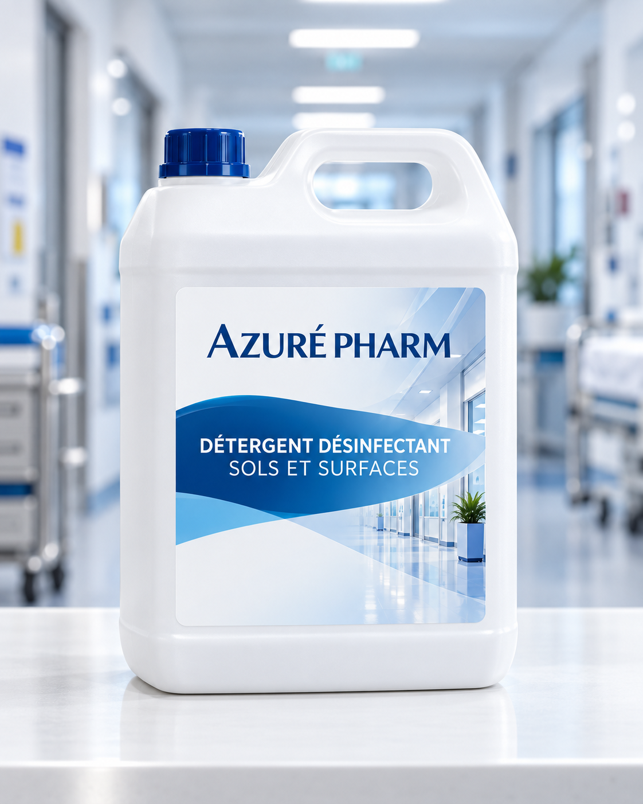
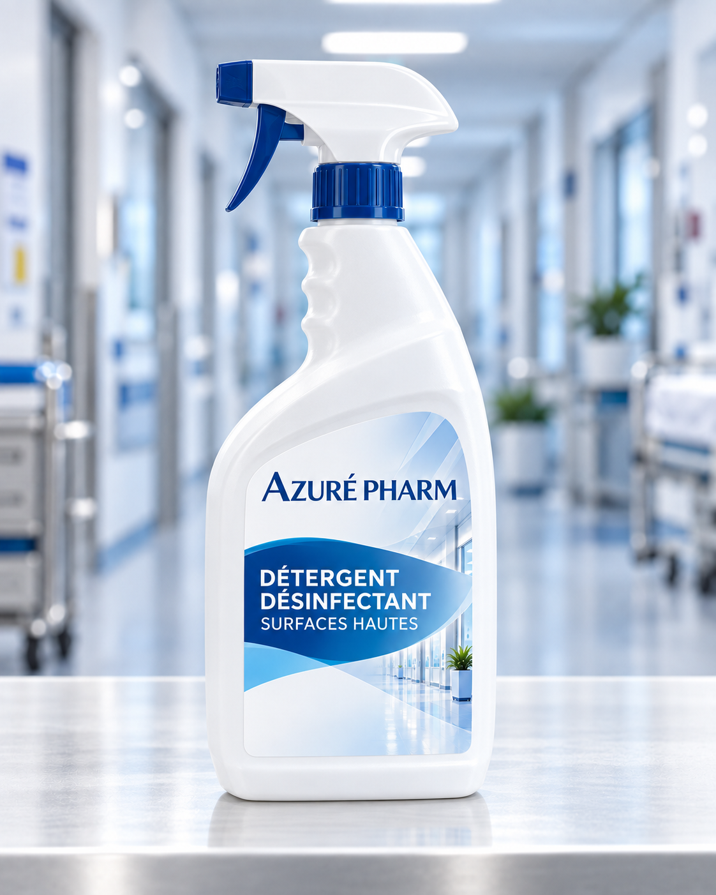
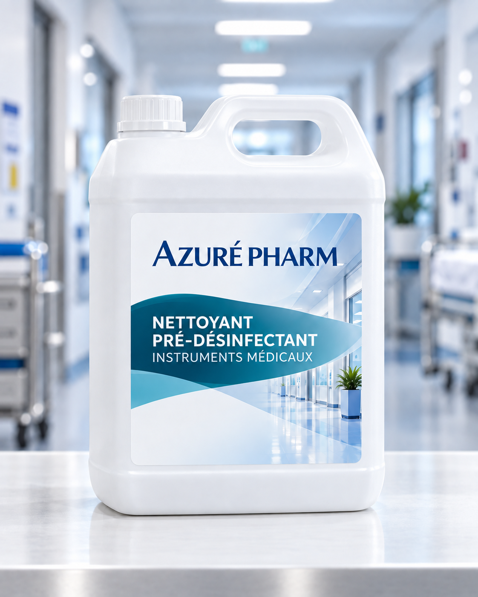

01
SOLS & SURFACES
Surfacide — sols et surfaces
Une gamme destinée à l’entretien des sols et des surfaces dans les environnements de soins et les espaces collectifs.
Voir la fiche Surfacide
Trois familles de produits dédiées aux besoins des hôpitaux, cliniques et collectivités.
Explorez la famille de produits qui correspond à votre besoin. Notre équipe peut vous renseigner sur les informations et documents disponibles pour chaque référence.
Une gamme destinée à l’entretien des sols et des surfaces dans les environnements de soins et les espaces collectifs.
Voir la fiche Surfacide
Des solutions consacrées à l’entretien des surfaces hautes et des zones de contact dans les établissements de santé.
Voir la fiche produit
Une famille de produits destinée à l’étape de pré-désinfection des instruments utilisés par les professionnels de santé.
Voir la fiche Presterimed
Les établissements de santé n’ont pas tous les mêmes usages. Précisez votre contexte pour obtenir une réponse adaptée.
Sols, surfaces hautes ou instruments : ce premier repère permet d’orienter la discussion vers la bonne famille.
Contactez-nous pour connaître les références, présentations et documents disponibles à jour.
Notre équipe échange avec les hôpitaux, cliniques et collectivités sur leurs demandes.
Pour les indications détaillées d’un produit, demandez toujours sa documentation spécifique.
Trois familles sont présentées ici : détergents désinfectants pour sols et surfaces, pour surfaces hautes, et nettoyants pré-désinfectants des instruments.
Azuré Pharm s’adresse notamment aux hôpitaux, aux cliniques et aux collectivités.
Utilisez le formulaire de contact ou appelez le 0660 456 457. Précisez la famille qui vous intéresse.